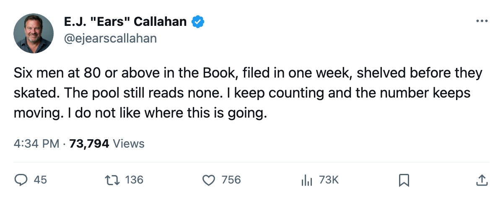
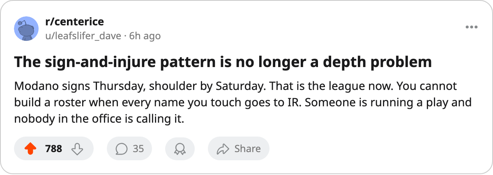

Sign-and-Injure, Round 8: Modano at 88, Sillinger at 87. 14 Clubs Filed 17 Names in 6 Days. 16 Are on IR.
The pattern has reached the top of the roster. Six names at 80 or above in the Book landed on a body-part list within 48 hours of signing.
 E.J. "Ears" CallahanInsider · The Hot Stove
E.J. "Ears" CallahanInsider · The Hot Stove
Sign-and-Injure, Round 8: 14 clubs, 17 names, 16 on IR, 6 at 80+ overall

The running count moves from 23 to 39. Fourteen clubs filed contracts between Oct 28 and Nov 2. Sixteen of the 17 names are on a body-part list today. The free-agent pool still reads none.
The batch reads like a top-six forward line
 Mike Modano84 walked into
Mike Modano84 walked into  Dallas Stars on Oct 28 at $307,130. His shoulder went sometime between Oct 29 and Nov 6. He returns Nov 9.
Dallas Stars on Oct 28 at $307,130. His shoulder went sometime between Oct 29 and Nov 6. He returns Nov 9.  Mike Sillinger87 signed with
Mike Sillinger87 signed with  Phoenix Coyotes on Nov 1 at $334,550. His back gave inside the same window. He is out until Dec 31.
Phoenix Coyotes on Nov 1 at $334,550. His back gave inside the same window. He is out until Dec 31.  Saku Koivu84 put pen to paper with
Saku Koivu84 put pen to paper with  Minnesota Wild on Nov 2 at $609,960. Shoulder, back on Nov 29. Three names at 84 or above in the Book, filed in a 72-hour stretch, shelved before they skated a shift.
Minnesota Wild on Nov 2 at $609,960. Shoulder, back on Nov 29. Three names at 84 or above in the Book, filed in a 72-hour stretch, shelved before they skated a shift.
 Derian Hatcher86 at 86 went to
Derian Hatcher86 at 86 went to  Detroit Red Wings on Nov 1 at $574,560. Concussion, back Dec 2.
Detroit Red Wings on Nov 1 at $574,560. Concussion, back Dec 2.  Alex Tanguay77 at 83 signed with
Alex Tanguay77 at 83 signed with  Colorado Avalanche on Oct 29 at $486,510. Head, back Dec 19.
Colorado Avalanche on Oct 29 at $486,510. Head, back Dec 19.  Steve Sullivan84 at 80 joined
Steve Sullivan84 at 80 joined  Chicago Blackhawks on Oct 31 at $601,000. Arm, back Nov 11.
Chicago Blackhawks on Oct 31 at $601,000. Arm, back Nov 11.
Six names at 80 or above in one batch. Every earlier round mixed in depth.
The only one who survived
Petr Schastlivy signed with  Ottawa Senators on Oct 31 at $285,620. He is not on the injured list, one name in 17.
Ottawa Senators on Oct 31 at $285,620. He is not on the injured list, one name in 17.
The clubs that filed: Dallas Stars,  Florida Panthers,
Florida Panthers,  St. Louis Blues,
St. Louis Blues,  Vancouver Canucks, Colorado Avalanche,
Vancouver Canucks, Colorado Avalanche,  Carolina Hurricanes, Chicago Blackhawks,
Carolina Hurricanes, Chicago Blackhawks,  Los Angeles Kings,
Los Angeles Kings,  New York Rangers,
New York Rangers,  Nashville Predators, Detroit Red Wings, Phoenix Coyotes, Minnesota Wild, and Ottawa Senators. Fourteen of 30. The pattern has touched every division.
Nashville Predators, Detroit Red Wings, Phoenix Coyotes, Minnesota Wild, and Ottawa Senators. Fourteen of 30. The pattern has touched every division.
| player | club | filed | salary | overall | body part | back |
|---|---|---|---|---|---|---|
| Mike Modano | DAL | Oct 28 | $307,130 | 88 | shoulder | Nov 9 |
| Lukas Krajicek74 | FLA | Oct 28 | $631,740 | 74 | abdomen | Dec 9 |
 Jamal Mayers70 Jamal Mayers70 | STL | Oct 29 | $441,880 | 66 | abdomen | Nov 8 |
 Jamie Allison64 Jamie Allison64 | VAN | Oct 29 | $87,110 | 68 | concussion | Jan 15 |
| Alex Tanguay | COL | Oct 29 | $486,510 | 83 | head | Dec 19 |
 Steve Rucchin80 Steve Rucchin80 | CAR | Oct 30 | $300,610 | 78 | elbow | Dec 19 |
| Steve Sullivan | CHI | Oct 31 | $601,000 | 80 | arm | Nov 11 |
 Mats Lindgren71 Mats Lindgren71 | VAN | Oct 31 | $579,090 | 75 | arm | Dec 5 |
| Jared Aulin73 | LA | Oct 31 | $250,950 | 71 | rib | Nov 7 |
 Eric Messier72 Eric Messier72 | FLA | Oct 31 | $431,800 | 72 | neck | Nov 18 |
| Dan LaCouture68 | NYR | Oct 31 | $329,890 | 70 | rib | Nov 13 |
| Andrew Ference74 | NSH | Nov 1 | $552,890 | 75 | back | Nov 29 |
| Derian Hatcher | DET | Nov 1 | $574,560 | 86 | concussion | Dec 2 |
| Mike Sillinger | PHX | Nov 1 | $334,550 | 87 | back | Dec 31 |
 Todd Simpson63 Todd Simpson63 | DAL | Nov 1 | $263,430 | 67 | hand | Nov 8 |
| Saku Koivu | MIN | Nov 2 | $609,960 | 84 | shoulder | Nov 29 |
The pool stays empty
League sources say the free-agent pool has held 0 names since the pattern began. Thirty-nine men filed contracts and went to a body-part list. None of them appear on a waiver wire. None of them clear through to the other 15 clubs.
A man who would know says the pattern started small, three names, depth guys, the kind you pick up on a Tuesday. The 80-and-above names are new, he says, and he does not like where it is going.

The league designates the body part. It does not record the cause. That silence is the story the desk cannot file. What it can file: 16 names, 14 clubs, 6 days, 6 men at 80 or above, zero available on the market.

